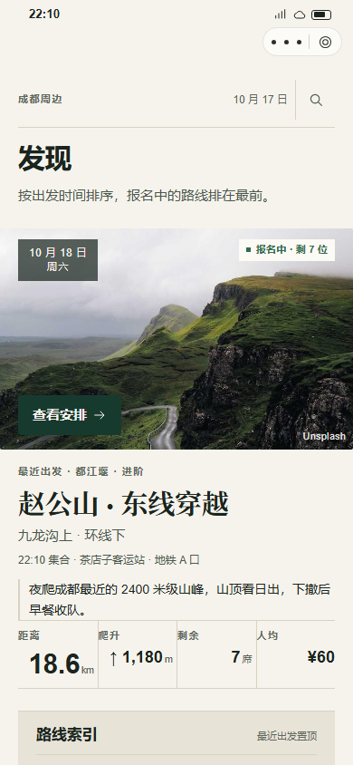
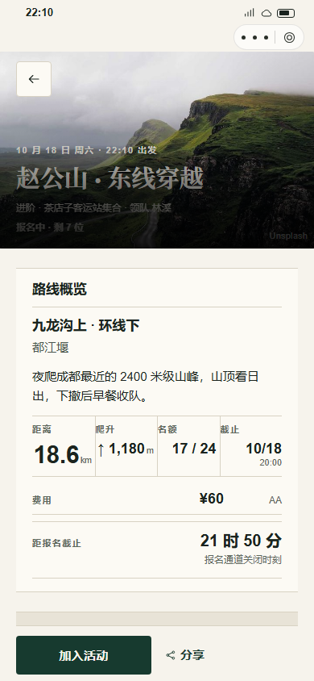
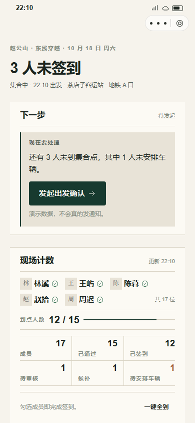
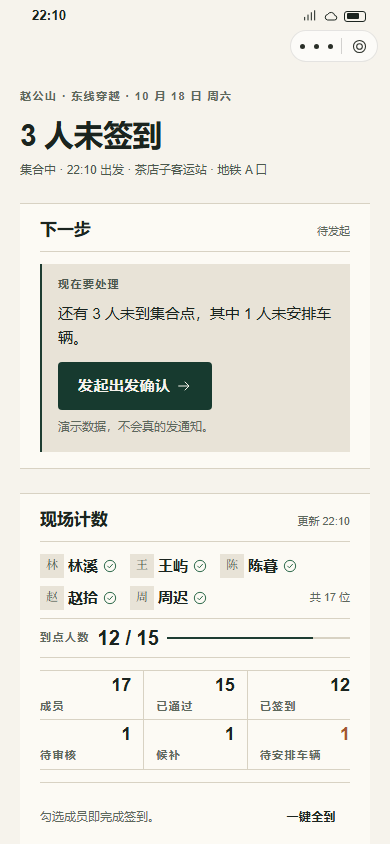
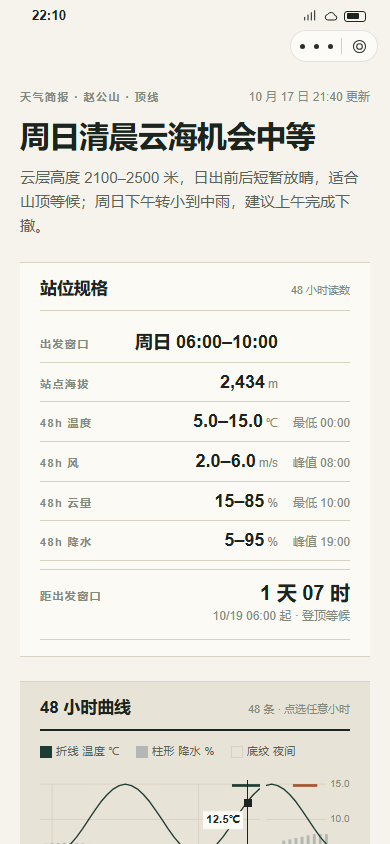
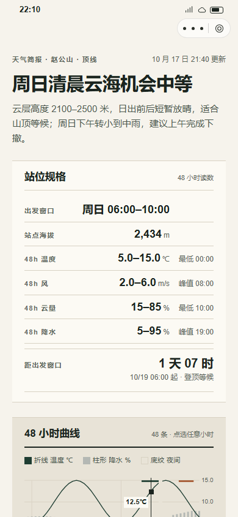

OURTRAIL · F 山野工坊 · FREEZE DELTA · 2026-10-20
定稿前 / 定稿后：同一套 F，不换风格
本轮在 F 上补入参考图里的路线示意、详情返回与顶部搜索，并修正三级文字对比度、关键触控与 token。摄影、纸带分区和主读数不变。
发现DISCOVER
定稿前 F v2

定稿后 F final

- 新增顶部搜索快捷；筛选 Tab 32 → 44px，搜索 / 清空同步。
- 三级文字 3.2:1 → 5.3:1，meta 不再发灰。
- 18.6 km 主读数与照片 CTA 保持唯一。
详情DETAIL
定稿前 F v2

定稿后 F final

- 新增返回 + 路线示意（见规范页）；首屏决策事实与费用保持。
- 说明 / 单位文字对比提升，纸带节奏不变。
- 单一 sticky CTA「加入活动」。
协作COLLAB
定稿前 F v2

定稿后 F final

- 任务前置、到点 12/15、待安排车辆仍唯一使用陶土。
- 「一键全到」34 → 44px；主 CTA 保持唯一。
- 现场 / 名单 / 分车仍按执行顺序。
天气WEATHER
定稿前 F v2

定稿后 F final

- 表格行高 → 44px；逐时 / 窗口判定更易点选。
- 图表与读数未改；图例与单位保持。
- 逐小时热区 6px，精确选择走表格行；生产改 scrubber。
4.56:1三级文字 / 燕麦底最低对比度；纸面 5.26，纸卡 5.59
44px四页按钮 / Tab / 搜索 / 表格行；图表 micro-hit 除外
24 / 24DOM 检查；375 / 390 / 414 横向溢出 0
3参考图补入的产品细节：路线示意 / 详情返回 / 顶部搜索